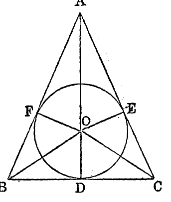
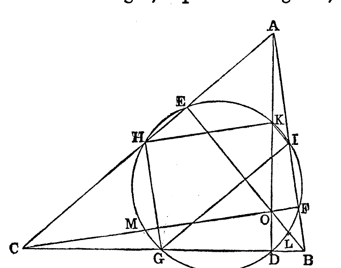

BOOK FOURTH.¶
SECTION I.¶
Additional Propositions.¶
Propositions 1–9 (pp. 53–63, Folios 0079–0089)
f. 0079 · p. 53Prop. 1.—If a circle be inscribed in a triangle, the distances from the angular points of the triangle to the points of contact on the sides are respectively equal to the remainders that are left, when the lengths of the sides are taken separately from their half sum.
Dem.—Let $ABC$ be the $\triangle$, $D, E, F$, the points of contact. Now, since the tangents from an external point are equal, we have $AE = AF$, $BD = BF$, $CD = CE$. Hence $AE + BC = AB + CE =$ half sum of the three sides $BC, CA, AB$; and denoting these sides by the letters $a, b, c$, respectively, and half their sum by $s$, we have $$AE + a = s$$ therefore $$AE = s - a.$$ In like manner $$BD = s - b; \quad CE = s - c.$$


Cor. 1.—If $r$ denote the radius of the inscribed $\odot$, the area of the triangle $= rs$.
For, let $O$ be the centre of the inscribed $\odot$, then we have $$BC . r = 2\ \triangle BOC,$$ $$CA . r = 2\ \triangle COA,$$ $$AB . r = 2\ \triangle AOB;$$ therefore $(BC + CA + AB)r = 2\ \triangle ABC$;
f. 0080 · p. 54that is, $$2sr = 2\ \triangle ABC;$$ therefore $$sr = \triangle ABC. \tag{$\alpha$}$$
Cor. 2.—If the $\odot$ touch the side $BC$ externally, and the sides $AB, AC$ produced; that is, if it be an escribed $\odot$, and if the points of contact be denoted by $D', E', F'$, it may be proved in the same manner that $AE' = AF' = s$; $BD' = BF' = s - c$; $CD' = CE' = s - b$.
These Propositions, though simple, are very important.
Cor. 3.—If $r'$ denote the radius of the escribed $\odot$, which touches the side $BC$ ($a$) externally, $$r'(s - a) = \triangle ABC.$$
Dem.— $$E'O' . AC = 2\ \triangle AO'C;$$ that is $$r' . b = 2\ \triangle AO'C.$$ In like manner $$r' . c = 2\ \triangle AO'B,$$ and $$r' . a = 2\ \triangle BO'C.$$ Hence $$r'(b + c - a) = 2\ \triangle ABC;$$ that is $$r' . 2(s - a) = 2\ \triangle ABC;$$ therefore $$r'(s - a) = \triangle ABC. \tag{$\beta$}$$
Cor. 4.—The rectangle $r . r' = (s - b)(s - c)$.
Dem.—Since $CO$ bisects the $\angle ACB$, and $CO'$ bisects the $\angle BCE'$, $CO$ is at right $\angle\text{s}$ to $CO'$; $\therefore$ the $\angle ECO + E'CO' =$ a right $\angle$; and $\angle ECO + COE =$ one right $\angle$; $\therefore E'CO' = COE$. Hence the $\triangle\text{s } E'CO', EOC$ are equiangular; and, therefore, $$E'O' . EO = E'C . CE; \tag{III. 9}$$ that is $$r . r' = (s - b)(s - c). \tag{$\gamma$}$$
f. 0081 · p. 55Cor. 5.—If we denote the area of the $\triangle ABC$ by $N$, we shall have $$N = \sqrt{s(s - a)(s - b)(s - c)}.$$
For, by equations ($\alpha$) and ($\beta$), we have $$rs = N, \text{ and } r'(s - a) = N.$$ Therefore, multiplying and substituting from ($\gamma$), we get $$N^2 = s(s - a)(s - b)(s - c);$$ therefore $$N = \sqrt{s(s - a)(s - b)(s - c)}.$$
Cor. 6.—$N = \sqrt{r . r' . r'' . r'''}$; where $r'', r'''$ denote the radii of the escribed circles, which touch the sides $b, c$, externally.
Cor. 7.—If the $\triangle ABC$ be right-angled, having the angle $C$ right, $$r = s - c; \quad r' = s - b; \quad r'' = s - a; \quad r''' = s.$$
Prop. 2.—If from any point perpendiculars be let fall on the sides of a regular polygon of $n$ sides, their sum is equal to $n$ times the radius of the inscribed circle.
Dem.—Let the given polygon be, say a pentagon $ABCDE$, and $P$ the given point, and the $\perp\text{s}$ from $P$ on the sides $AB, BC$, &c., be denoted by $p_1, p_2, p_3$, &c., and let the common length of the sides of the polygon be $s$; then $$2\ \triangle APB = sp_1;$$ $$2\ \triangle BPC = sp_2;$$ $$2\ \triangle CPD = sp_3;$$ $$\text{&c., &c.;}$$ therefore, by addition, twice the pentagon $$= s(p_1 + p_2 + p_3 + p_4 + p_5).$$ Again, if we suppose $O$ to be the centre of the inscribed circle, and $R$ its radius, we get, evidently, $$2\ \triangle AOB = Rs;$$
f. 0082 · p. 56but the $\text{pentagon} = 5\ \triangle AOB$; therefore $$\text{twice pentagon} = 5Rs;$$ therefore $$s(p_1 + p_2 + p_3 + p_4 + p_5) = 5Rs.$$ Hence $$p_1 + p_2 + p_3 + p_4 + p_5 = 5R.$$
Prop. 3.—If a regular polygon of $n$ sides be described about a circle, the sum of the perpendiculars from the points of contact on any tangent to the circle equal $nR$.
Dem.—Let $A, B, C, D, E$, &c., be the points of contact of the sides of the polygon with the $\odot$, $L$ any tangent to the $\odot$, and $P$ its point of contact. Now, the $\perp\text{s}$ from the points $A, B, C$, &c., on $L$, are respectively equal to the $\perp\text{s}$ from $P$ on the tangents at the same points; but the sum of the $\perp\text{s}$ from $P$ on the tangents at the points $A, B, C$, &c., $= nR$ (2). Hence the sum of the $\perp\text{s}$ from the points $A, B, C$, &c., on $L = nR$.
Cor. 1.—The sum of the $\perp\text{s}$ from the angular points of an inscribed polygon of $n$ sides upon any line equal $n$ times the $\perp$ from the centre on the same line.
Cor. 2.—The centre of mean position of the angular points of a regular polygon is the centre of its circumscribed circle.
For, since there are $n$ points, the sum of the $\perp\text{s}$ from these points on any line equal $n$ times the $\perp$ from their centre of mean position on the line (I., 17); therefore the $\perp$ from the centre of the circumscribed $\odot$ on any line is equal to the $\perp$ from the centre of mean position on the same line; and, consequently, these centres must coincide.
Cor. 3.—The sum of the $\perp\text{s}$ from the angular points of an inscribed polygon on any diameter is zero; or, in other words, the sum of the $\perp\text{s}$ on one side of the diameter is equal to the sum of the $\perp\text{s}$ on the other side.
Prop. 4.—If a regular polygon of $n$ sides be inscribed in a circle, whose radius is $R$, and if $P$ be any point whose distance from the centre of the circle is $R'$, then the sum of the squares of all the lines from $P$ to the angular points of the polygon is equal to $n(R^2 + R'^2)$.
f. 0083 · p. 57Dem.—Let $O$ be the centre of the $\odot$, then $O$ is the mean centre of the angular points; hence (II., 10) the sum of the squares of the lines drawn from $P$ to the angular points exceeds the sum of the squares of the lines drawn from $O$ by $n OP^2$, that is by $n R'^2$; but all the lines drawn from $O$ to the angular points are equal to one another, each being the radius. Hence the sum of their squares is $n R^2$. Hence the Proposition is proved.
Cor. 1.—If the point $P$ be in the circumference of the $\odot$, we have the following theorem:—The sum of the squares of the lines drawn from any point in the circumference of a circle to the angular points of an inscribed polygon is equal to $2n R^2$.
The following is an independent proof of this theorem:—It is seen at once, if we denote the $\perp\text{s}$ from the angular points on the tangent at $P$ by $p_1, p_2$, &c., that $$2R . p_1 = AP^2;$$ $$2R . p_2 = BP^2;$$ $$2R . p_3 = CP^2\text{, &c.}$$ Hence $$2R(p_1 + p_2 + p_3 + \text{&c.}) = AP^2 + BP^2 + CP^2\text{, &c.};$$ or $$2R . nR = AP^2 + BP^2 + CP^2\text{, &c.};$$ therefore the sum of the squares of all the lines from $P = 2n R^2$.
Cor. 2.—The sum of the squares of all the lines of connexion of the angular points of a regular polygon of $n$ sides, inscribed in a $\odot$ whose radius is $R$, is $n^2 R^2$.
This follows from supposing the point $P$ to coincide with each angular point in succession, and adding all the results, and taking half, because each line occurs twice.
Prop. 5.—If $O$ be the point of intersection of the three perpendiculars $AD, BE, CF$ of a triangle $ABC$, and if $G, H, I$ be the middle points of the sides of the triangle, and $K, L, M$ the middle points of the lines $OA, OB, OC$; then the nine points $D, E, F$; $G, H, I$; $K, L, M$, are in the circumference of a circle.
f. 0084 · p. 58Dem.—Join $HK, HG, IK, IG$; then, because $AO$ is bisected in $K$, and $AC$ in $H$, $HK$ is $\parallel$ to $CO$. In like manner, $HG$ is $\parallel$ to $AB$. Hence the $\angle GHK$ is equal to the $\angle$ between $CO$ and $AB$; $\therefore$ it is a right $\angle$; consequently, the $\odot$ described on $GK$ as diameter passes through $H$. In like manner, it passes through $I$; and since the $\angle KDG$ is right, it passes through $D$; $\therefore$ the


circle through the three points $G, H, I$, passes through the two points $D, K$. In like manner, it may be proved that it passes through the pairs of points $E, L$; $F, M$. Hence it passes through the nine points.
Def.—The circle through the middle points of the sides of a triangle is called, on account of the property we have just proved, “The Nine-points Circle of the Triangle.”
Prop. 6.—To draw the fourth common tangent to the two escribed circles of a plane triangle, which touch the base produced, without describing those circles.
Con.—From $B$, one of the extremities of the base, let fall a $\perp BG$ on the external bisector $AI$ of the vertical $\angle$ of the $\triangle ABC$; produce $BG$ and $AI$ to meet the sides $CA, CB$ of the $\triangle$ in the points $H$ and $I$; then the line joining the points $H$ and $I$ is the fourth common tangent.
Dem.—The $\triangle\text{s } BGA, HGA$ have the side $AG$ common, and the $\angle\text{s}$ adjacent to this side in the two $\triangle\text{s}$
f. 0085 · p. 59equal each to each; hence $AH = AB$. Again the $\triangle\text{s } AHI, ABI$ have the sides $AH, AI$ and the included $\angle$ in the one equal to the two sides $AB, AI$ and the included $\angle$ in the other; $\therefore$ the $\angle HIA = BIA$.
Now, bisect the $\angle ABI$ by the line $BO$, and it is evident, by letting fall $\perp\text{s}$ on the four sides of the quadrilateral $ABIH$ from the point $O$, that the four $\perp\text{s}$ are equal to one another. Hence the $\odot$, having $O$ as centre, and any of these $\perp\text{s}$ as radius, will be inscribed in the quadrilateral; $\therefore HI$ is a tangent to the escribed $\odot$, which touches $AB$ externally. In like manner, it may be proved that $HI$ touches the escribed $\odot$, which touches $AC$ externally. Hence $HI$ is the fourth common tangent to these two circles.
Cor. 1.—If $D$ be the middle point of the base $BC$, the $\odot$, whose centre is $D$ and whose radius is $DG$, is orthogonal to the two escribed $\odot\text{s}$ which touch $BC$ produced.
For, let $P$ be the point of contact of the escribed $\odot$, which touches $AB$ externally, then $$PD = CP - CD = \frac{1}{2}(a + b + c) - \frac{1}{2}a = \frac{1}{2}(b + c);$$ and since $BH$ is bisected in $G$, and $BC$ in $D$, $$DG = \frac{1}{2}CH = \frac{1}{2}(AB + AC) = \frac{1}{2}(b + c);$$ therefore the $\odot$, whose centre is $D$ and radius $DG$, will cut orthogonally the $\odot$ which touches at $P$.
f. 0086 · p. 60Cor. 2.—Let $DG$ cut $AB$ in $M$, and $HI$ in $K$, and from $A$ let fall the $\perp AL$, then the quadrilateral $LMKI$ is inscribed in a circle.
For, since the $\angle\text{s } ALB, AGB$ are right, $ALBG$ is a quadrilateral in a $\odot$, and $M$ is the centre of the $\odot$; $\therefore ML = MB$, and $\angle MLB = MBL$. Again, $\angle MKI = AHI = ABI$; $\therefore MKI + MLI = ABI + MBL =$ two right $\angle\text{s}$. Hence $MKIL$ is a quadrilateral inscribed in a circle.
Prop. 7.—The “Nine-points Circle” is the inverse of the fourth common tangent to the two escribed circles which touch the base produced, with respect to the circle whose centre is at the middle point of the base, and which cuts these circles orthogonally.
Dem.—The $\angle DML$ (see fig., last Prop.) = twice $DGL$ (III. xx.); and the $\angle HIL = \text{twice } AIL$; but $DML = HIL$, since $MKIL$ is a quadrilateral in a $\odot$; $\therefore$ the $\angle DGL = GIL$. Hence, if a $\odot$ be described about the $\triangle GIL$ it will touch the line $GD$ (III. xxxii.); $\therefore DL . DI = DG^2$; $\therefore$ the point $L$ is the inverse of the point $I$, with respect to the $\odot$ whose centre is $D$ and radius $DG$. Again, since $MKIL$ is a quadrilateral in a $\odot$, $DM . DK = DL . DI$, and, $\therefore = DG^2$. Hence the point $M$ is the inverse of $K$, and $\therefore$ the $\odot$ described through the points $DLM$ is the inverse of the line $HI$ (III. 20); that is, the “Nine-points Circle” is the inverse of the fourth common tangent, with respect to the $\odot$ whose centre is the middle point of the base, and whose radius is equal to half the sum of the two remaining sides.
Cor. 1.—In like manner, it may be proved that the “Nine-points Circle” is the inverse of the fourth common tangent to the inscribed $\odot$ and the escribed $\odot$, which touches the base externally, with respect to the $\odot$ whose centre is the middle point of the base, and whose radius is to half the difference of the remaining sides.
Cor. 2.—The “Nine-points Circle” touches the inscribed and the escribed circles of the triangle.
For, since it is the inverse of the fourth common
f. 0087 · p. 61tangent to the two escribed $\odot\text{s}$ which touch the base produced, with respect to the $\odot$ whose centre is $D$, and which cuts these $\odot\text{s}$ orthogonally; if we join $D$ to the points of contact of the fourth common tangent, the points where the joining lines meet these $\odot\text{s}$ again will be the inverses of the points of contact. Hence they will be common both to the “Nine-points Circle” and the escribed $\odot\text{s}$; $\therefore$ the “Nine-points Circle” touches these escribed $\odot\text{s}$ in these points; and in a similar way the points of contact with the inscribed $\odot$ and the escribed $\odot$ which touch the base externally may be found.
Cor. 3.—Since the “Nine-points Circle” of a plane $\triangle$ is also the “Nine-points Circle” of each of the three $\triangle\text{s}$ into which it is divided by the lines drawn from the intersection of its $\perp\text{s}$ to the angular points, we see that the “Nine-points Circle” touches also the inscribed and escribed circles of each of these triangles.
Prop. 8.—The following Propositions, in connexion with the circle described about a triangle, are very important:—
(1). The lines which join the extremities of the diameter, which is perpendicular to the base of a triangle, to the vertical angle, are the internal and external bisectors of the vertical angle.
Dem.—Let $DE$ be the diameter $\perp$ to $BC$. Join $AD, AE$. Produce $AE$ to meet $CB$ in $I$. Now, from the construction, we have the arc $CD =$ the arc $BD$. Hence the $\angle CAD = DAB$; $\therefore AD$ is the internal bisector of the $\angle CAB$. Again, since $DE$ is the diameter of the $\odot$,
f. 0088 · p. 62the $\angle DAE$ is right; $\therefore$ the $\angle DAE = DAH$; and from these, taking away the equal $\angle\text{s } CAD, DAB$, we have the $\angle CAE = BAH$; $\therefore JAH = BAH$. Hence $AH$ is the external bisector.
(2). If from $D$ a perpendicular be let fall on $AC$, the segments $AG, GC$ into which it divides $AC$ are respectively the half sum and the half difference of the sides $AB, AC$.
Dem.—Join $CD, GF$. Draw $FH \parallel$ to $AC$. Since the $\angle\text{s } CGD, CFD$ are right, the figure $CGFD$ is a quadrilateral in a $\odot$. Hence the $\angle AGF = CDE$ (III., xxii.) $= CAE$ (III., xxi.); $\therefore GF$ is $\parallel$ to $AE$. Hence $AHFG$ is a $\square$; and $AG = FH =$ half sum of $AB, AC$ (I., 11, Cor. 1). Again, $GC = AC - AG = AC - \frac{1}{2}(AB + AC) = \frac{1}{2}(AC - AB)$.
(3). If from $E$ a perpendicular $EG'$ be drawn to $AC$, $CG'$ and $AG'$ are respectively the half sum and the half difference of $AC, AB$.
This may be proved like the last.
(4). Through $A$ draw $AL$ perpendicular to $DE$. The rectangle $DL . EF$ is equal to the square of half the sum of the sides $AC, AB$.
Dem.—The $\triangle\text{s } ALD, EFI$ have evidently the $\angle\text{s}$ at $D$ and $I$ equal, and the right $\angle\text{s}$ at $L$ and $F$ are equal. Hence the $\triangle\text{s}$ are equiangular; $\therefore DL . EF = AL . FI = FK . FI =$ the square of half the sum of the sides (Prop. 7).
(5). In like manner it may be proved that $EL . FD$ is equal to the square of half the difference of $AC, AB$.
Prop. 9.—If $a, b, c$ denote, as in Prop. 1, the lengths of the sides of the triangle $ABC$, then the centre of the inscribed circle will be the centre of mean position of its angular points for the system of multiples $a, b, c$.
Dem.—Let $O$ be the centre of the inscribed $\odot$. Join $CO$; and on $CO$ produced let fall the $\perp\text{s } AL, BM$. Now, the $\triangle\text{s } ACL, BCM$ have the $\angle ACL = BCM$;
f. 0089 · p. 63and the $\angle ALC = BMC$. Hence they are equiangular; $$\text{therefore} \qquad BC . AL = AC . BM; \tag{III. 9}$$ $$\text{or} \qquad a . AL = b . BM. \tag{$\alpha$}$$
Now, if we introduce the signs $+$ and $-$, since the $\perp\text{s } AL, BM$ fall on different sides of $CL$, they must be affected with contrary signs; $\therefore$ the equation ($\alpha$) expresses that $a$ times the $\perp$ from $A$ on $CO + b$ times the $\perp$ from $B$ on $CO = 0$; and since the $\perp$ from $C$ on $CO$ is evidently $= 0$, we have the sum of $a$ times perpendicular from $A$; $b$ times perpendicular from $B$; $c$ times perpendicular from $C$, on the line $CO = 0$. Hence the line $CO$ passes through the centre of mean position for the system of multiples $a, b, c$. In like manner, $AO$ passes through the centre of mean position. And since a point which lies on each of two lines must be their point of intersection, $O$ must be the centre of mean position for the system of multiples $a, b, c$.
Cor. 1.—If $O', O'', O'''$ be the centres of the escribed $\odot\text{s}$, $O'$ is the centre of mean position for the system of multiples $- a, + b, + c$; $O''$ for the system $+ a, - b, + c$: and $O'''$ for the system $+ a, + b, - c$.